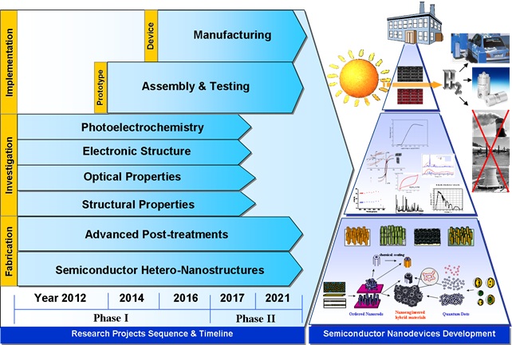
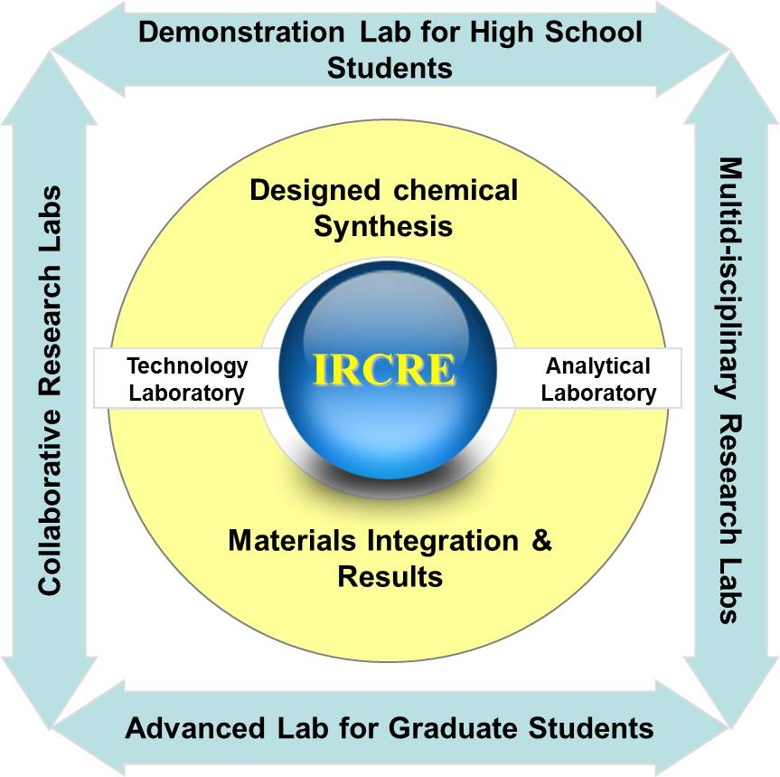

|
|
Introduction of the InTernational Research Center for Renewable Energy |
|
The International Research Center for Renewable
Energy (IRCRE) embodies a flexible material and device target driven
structure, which address the scientific and engineering issue for application of renewable
energy such as solar, hydrogen, etc. For this purpose, we capitalize on the vertical
integration of the research capabilities in basic sciences and engineering available with
international and national directors and PIs. The collective thrust of the scientific
domains will incite innovations (Phase I) in nanomaterials development for Alternative
Energy Sources and evaluate their societal and economic impact (Phase II). The key research
areas complement the on-going research activities in China, and are based on the proven
strengths of foreign and local PIs, visiting scientists and collaborators involved in this
application. The envisaged core competency will enable fruitful collaborations with
established other research institutes. IRCRE will act as an internationally competitive
platform to attract both young leaders through the established extended global network of
the directors and PIs as well as by collaborating with world renowned centers. The human
capital training and educational outreach will form an integral part of IRCRE, and will be
realized by fostering links to high-schools, structured graduate education, and fast-track
hiring of excellent young scientists through Director’s funds. The designated Director
General will be Prof. L. Guo, director of the State Key Lab of Multiphase Flow in Power
Engineering, former dean of the School of Energy and Power Engineering at Xi’an
Jiaotong University. An internationally renowned scientist will be appointed as one of the
Scientific Directors to work at IRCRE, firstly on a part-time then full-time basis. Several
international PIs and collaborators are committed to relocate themselves (fully or
part-time) to Xi’an, which will substantially add to the global visibility of China’s
national R&D landscape and lead to capacity building in materials-based innovations for
energy and environment.
|
 |
||
|
||
|
IRCRE strives to develop most effective methods for materials production and management
through cutting-edge interdisciplinary efforts. This would demand close interactions and
complementarities among scientists with different technical backgrounds and research
interests, which will be facilitated by the proposed center. In addition to the well-known
size-effects in nanoscopic matter, it is realistic to anticipate that increasing complexity
in nanostructures, for instance by creating nanoscale building blocks with two or more
components or by modifying their surface chemistry will offer new opportunities to bond (and
disbond), assemble and integrate them into new material systems. Chemical interactions
(electronic, steric, electrostatic, van der Waals, etc.) are the major source to code
information into molecular assemblies and nanostructures, for example, surface
functionalized inorganic nanoparticles can be selectively attached to a biomolecule or
organized into periodic arrays by tuning the surface chemistry of both nanostructure and the
substrate. Similarly, the intrinsic properties of discrete molecular species can be
preserved in a polymer matrix to create hybrid materials with novel optical, electronic and
catalytic activities. The development of advanced materials will serve the functional
assemblies and devices, and construction of renewable energy system. Thus, to meet the
demand for the development of renewable energy (especially solar and hydrogen) and related
energy materials, IRCRE will set up five research divisions. The key areas of the five
research divisions in IRCRE are depicted as follows:
1. Photothermal conversion and hydrogen generation division: This division has an eye to the new principles and new technologies in solar thermal power generation and utilization of solar energy for hydrogen production from biomass decomposition in supercritical water. The main works include the following aspects: The reaction mechanism and kinetic of hydrogen production by supercritical water gasification of biomass (including organic wastes); preparation and characterization of cost-effective catalysts for thermo chemical hydrogen production and the catalytic reaction mechanism; multiphase flow mechanics in hydrogen production system by supercritical water gasification and mechanism of heat and mass transfer; reactor design and structural theory of heat supply by solar energy concentration coupling with efficient gasification of biomass for hydrogen production in supercritical water; multi field coupling heat and mass transfer and energy conversion theory and numeric simulation of solar receiver cavity in complicated conditions; analysis of system thermodynamics and economics in the hydrogen production process by solar thermo chemical method; scale-up, integration and optimization of hydrogen production process by solar thermo chemical method; regulating and controlling theory of the coupling system stability of hydrogen production process by solar thermo chemical method; the design of demonstration system of hydrogen production by biomass gasification in supercritical water coupling with solar energy concentrating system; and the novel principles of the heat transfer, storage, conversion and utilization, principle of process and the study of component and system. 2. Photocatalysis/photoelectrochemistry and functional materials division: This division focuses on the design and preparation of functional materials with nano and molecular technologies for photocatalytic, photoelectrochemical and thermoelectric devices, aiming at efficient and stable solar-hydrogen and thermoelectric conversion. The key areas include: combination and rationalization of all solution and gas-phase bottom-up approaches of materials chemistry; directed supra-molecular self-assembly; atomic and molecular chemical manipulation; synthesis of multi-elemental metal-organic precursors; low temperature aqueous chemical growth for highly oriented structures on virtually any substrates; unusual/forbidden crystal axis anisotropic growth; heterometallic solution and vapor synthesis of complex and doped nanomaterials; functional supramolecular nanostructures; organized thin films and arrays; quantum confined hetero-nanostructures; visible-light active heterostructures; synthesis and stabilization of metastable nanostructures; 2nd to 3rd generation solar cells; quantum dots sensitized quantum rods visible-light active photocatalysts for solar hydrogen generation. 3. Microbiological hydrogen generation division: With the purpose to realize hydrogen production from renewable energy in an efficient, low cost and pollution-free way, this division focuses on the following three aspects. 1) Investigating the genetic nature of the degeneration effect of candidate bacteria in dark fermentation using comparative genomic method, and then constructing engineering strain to improve the conversion efficiency. 2) Studying on the hydrogen production pathway of PNS (purple non-sulfur photosynthetic bacteria) to knock out the genes that are not conducive to hydrogen production and enhance gene expression that related with the target product. Thus, the solar to chemistry energy conversion efficiency and hydrogen production can be improved. 3) Research on the degradation mechanism of aromatic compounds by the PNS will be carried out. We are planning to construct safely engineered microorganisms that are able to decompose this kind of pollutants efficiently to handle of special sewage including printing and dyeing wastewater. 4. Fuel cell division: This division is engaged in the design and development of highly catalytic and cheap alloy electrode, cermet composite electrode and stable nano-electrode materials. It aims to design novel cell structure and assemble stack according to the properties of new materials, and lay a foundation on the construction of cost-effective power generation system. The key research fields on fuel cells include material design and system construction, fabrication of highly ionic conducting electrolyte materials and membranes, fabrication of stable and cheap electrode materials, optimization of composition, structure and performance, design of novel cell structure and construction of stack, numerical simulation and parameter optimization, and next generation fuel cells. 5. Solar-hydrogen system integration division: Considering the new energy materials, this division focuses on the research of system components of solar water splitting (including photocatalytic, photoelectrochemical, photobiological), solar pyrolysis hydrogen production and power generation from the point view of integration of materials, modularization of functions and scale-up of systems. We will build up new kinds of renewable energy systems to realize high-efficiency but low-cost conversion from solar energy to hydrogen energy directly. Anyway, we will provide direct scientific and technical supports for the design, optimization and future utilization of renewable energy systems. |
|
The mission of the International Research Center for Renewable Energy is to
foster research and technology solutions by integrating the expertise and skills of an
efficient team of high-profile researchers and engineers, who will join the center from
premier educational and research institutions around the globe. IRCRE will capitalize on the
development of materials-based technologies by the fusion of chemical, materials, bio- and
nano-technologies. Chemical interactions at multiple length scales ranging from short range
intra- and intermolecular interactions to long range collective phenomenon in solids will
constitute the scientific foundation, and functional integration for renewable energy system
construction will constitute the engineering foundation of the proposed research center of
excellence Therefore, hierarchical integration of molecular and nanoscaled building blocks
into functional assemblies and devices, and construction of renewable energy system will
form the central tenet of IRCRE.
The center will be carried out within a 10-year period and completed by the creation of spin-offs. It will be divided in two distinctive and consecutive phases. Phase I, which comprises Year 1 to 5, will be dedicated to materials development and characterization. Phase II, will consist of year 5-10 of the program and will be dedicated almost entirely on the real-scale development and manufacturing, as well as packaging, assembly and testing of the successful prototypes selected at the end of Phase I. |
|

|
|
Overview of the proposed timeline, task assignments, and outcome of the center
|
|
The infrastructure and laboratories set-ups as part of the Center for
Renewable Fuels & Nanotechnology would be an open shared facility that will benefit and
support all Chinese industries and research institutions. The
center will house joint laboratories for scaled-up solution and vapor
chemical syntheses of nanostructured materials, nanofabrication and microscopic structural
and functional characterization of new material systems and devices. In addition, IRCRE will
feature dedicated demonstration laboratories for high-school to PhD students to gain
hands-on experience and training in chemical nanotechnology and nanodevices fabrication,
integration, characterization, testing, and prototyping. These nanoscience and
nanotechnology facilities will be accessible to external local collaborators (externally
funded groups) as well as international visiting scientists.
|
|

|
|
The IRCRE has six types researchers，1） Director (Full Commitment), 2）
Scientific-Directors (Half and Full Commitment), 3） Principal Investigators (Half and Full
commitment), 4） Research staff, 5） Consultants/visiting Scientists, 6） International
Advisory Board.
|
 |
|
The Project Management Office (PMO) directly assists the Directors and act
as the focal point for all IRCRE activities and coordinate, monitor and control the progress
of all projects. In addition, PMO will maintain accurate records of costs, resources and
time scales for the projects. Further, it will inform the IRCRE members about their rights
and obligations in intellectual property issues and will liaise with the administration to
develop a strategy to handle such cases. The role of the Directors includes harmonization of
technical aspects, maximization of synergies and mutual and effective exchange of
information within the center. The Principal Investigators will be responsible for the
technical objectives and outcome of the projects. They will ensure that project maintains
its relevance within the scope of IRCRE and agreed work plan. For scientific and strategic
planning a Scientific & Industrial Advisory Board will be established. Leading members
from academia and industry, who will serve on this advisory board, have been contacted and
will guide IRCRE in planning the technical road-map to meet the long-term objectives.
National and overseas collaborators identified as project partners are listed above.
Additional collaborators will be invited, when additional expertise will be needed to
broaden the knowledge base and IRCRE network. Latter will be promoted by offering visiting
fellowships funded by the Director’s funds. The proposed vertical integration of
fundamental research with nanoengineering will be realized by maintaining strong contact
with industrial partners, which would enable IRCRE technology platform to cater the need of
local and international industries.
|
 |
|
Overall management structure and economic output of the center
|
 |
|
Detailed management structure and economic output of the research program
|